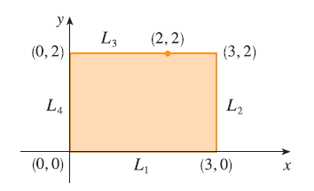
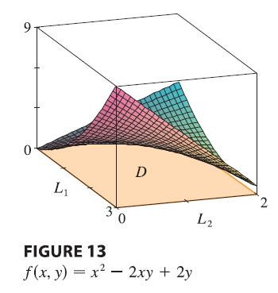

EXAMPLE Find the absolute maximum and minimum values of the function \(f(x, y) = x^2 - 2xy + 2y\) on the rectangle \(D = \{(x, y) | 0 \le x \le 3, 0 \le y \le 2\}\).

SOLUTION Since \(f\) is a polynomial, it is continuous on the closed, bounded rectangle \(D\), so Theorem 8 tells us there is both an absolute maximum and an absolute minimum. According to step 1, we first find the critical points. These occur when \[ f_x = 2x - 2y = 0 \quad f_y = -2x + 2 = 0 \] so the only critical point is \((1, 1)\), and the value of \(f\) there is \(f(1, 1) = 1\). In step 2 we look at the values of \(f\) on the boundary of \(D\), which consists of the four line segments \(L_1, L_2, L_3, L_4\). On \(L_1\) we have \(y = 0\) and \[ f(x, 0) = x^2 \quad 0 \le x \le 3 \] This is an increasing function of \(x\), so its minimum value is \(f(0, 0) = 0\) and its maximum value is \(f(3, 0) = 9\). On \(L_2\) we have \(x = 3\) and \[ f(3, y) = 9 - 4y \quad 0 \le y \le 2 \] This is a decreasing function of \(y\), so its maximum value is \(f(3, 0) = 9\) and its minimum value is \(f(3, 2) = 1\). On \(L_3\) we have \(y = 2\) and \[ f(x, 2) = x^2 - 4x + 4 \quad 0 \le x \le 3 \] By observing that \(f(x, 2) = (x - 2)^2\), we see that the minimum value of this function is \(f(2, 2) = 0\) and the maximum value is \(f(0, 2) = 4\). Finally, on \(L_4\) we have \(x = 0\) and \[ f(0, y) = 2y \quad 0 \le y \le 2 \] with maximum value \(f(0, 2) = 4\) and minimum value \(f(0, 0) = 0\). Thus, on the boundary, the minimum value of \(f\) is 0 and the maximum is 9. In step 3 we compare these values with the value \(f(1, 1) = 1\) at the critical point and conclude that the absolute maximum value of \(f\) on \(D\) is \(f(3, 0) = 9\) and the absolute minimum value is \(f(0, 0) = f(2, 2) = 0\). Figure shows the graph of \(f\).
